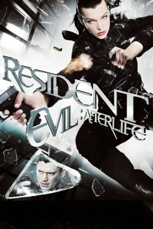

 
 IMDB-Wertung: 5.9 / 10
IMDB-Wertung: 5.9 / 10  Tomatometer: 23
Tomatometer: 23  Metascore:
Metascore: 
Die Apokalypse, ausgelöst von der Umbrella Corporation, hat fast die gesamte Menschheit mit ihrem Virus infiziert und in mörderische Untote verwandelt. Alice, die auf der Suche nach weiteren Überlebenden ist, macht sich bereit, den skrupellosen Konzern endgültig zu vernichten. Sie begibt sich nach Los Angeles in der Hoffnung, dort für die letzten verbliebenen Menschen eine Oase des Friedens vorzufinden. Doch es ist zu spät! Auch hier haben sich bereits tausende Infizierte ausgebreitet und Alice und ihre Begleiter finden sich in einer scheinbar ausweglosen und tödlichen Falle wieder…
Jahr: 2010
Dauer: 96 Minuten
FSK: 16
Land: Deutschland Studio: Constantin FilmTonspuren: DTS - ,
Untertitel:
Auflösung: 1080p (1920x800) Größe: 5099 MB
Genre: Action, Horror, Sci-Fi, Abenteuer
Regisseur: Paul W.S. Anderson
Drehbuch: Paul W.S. Anderson
Soundtrack: tomandandy
Darsteller:
 Milla Jovovich als Alice
Milla Jovovich als Alice Ali Larter als Claire Redfield
Ali Larter als Claire Redfield Kim Coates als Bennett
Kim Coates als Bennett Shawn Roberts als Albert Wesker
Shawn Roberts als Albert Wesker Spencer Locke als K-Mart
Spencer Locke als K-Mart Boris Kodjoe als Luther
Boris Kodjoe als Luther Wentworth Miller als Chris Redfield
Wentworth Miller als Chris Redfield Sienna Guillory als Jill Valentine
Sienna Guillory als Jill Valentine Bill Blair als Featured Zombie (uncredited)
Bill Blair als Featured Zombie (uncredited)Datei: X:\7+mehr(A-Z)\Resident Evil\Resident Evil 4 - Afterlife (2010, FSK16, 1920x800) 3D.mkv seit 24.04.2019
Festplatte: HD Collection-7+mehr(A-Z)+Person
 Es gibt insgesamt 15 Filme in der Gruppe '7+mehr(A-Z)\Resident Evil'
Es gibt insgesamt 15 Filme in der Gruppe '7+mehr(A-Z)\Resident Evil'